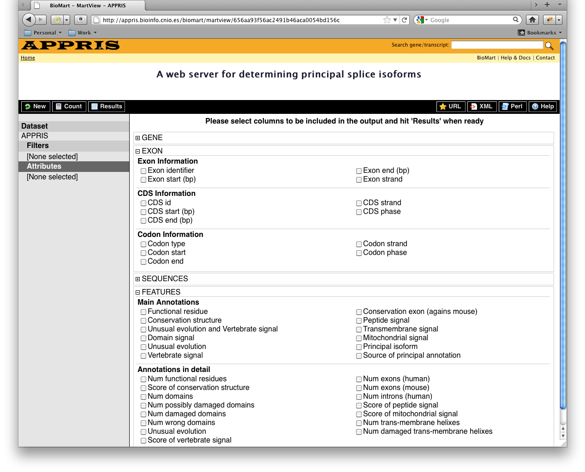

BioMart is a query-oriented data management system developed jointly by the Ontario Institute for Cancer Research (OICR) and the European Bioinformatics Institute (EBI).
APPRIS supports downloading of many more correlation tables via the highly customisable BioMart data mining tool. You may find exploring this web-based data mining tool easier than extracting information from our normalised database dumps.
